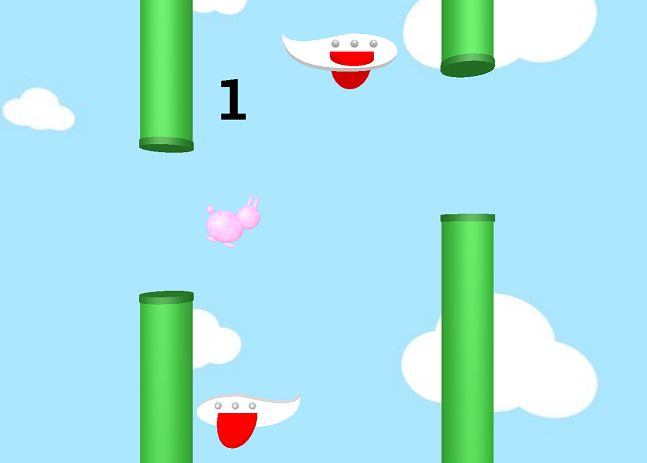
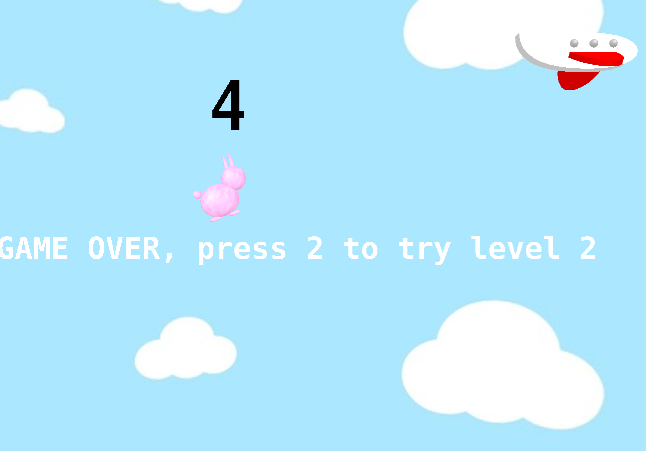
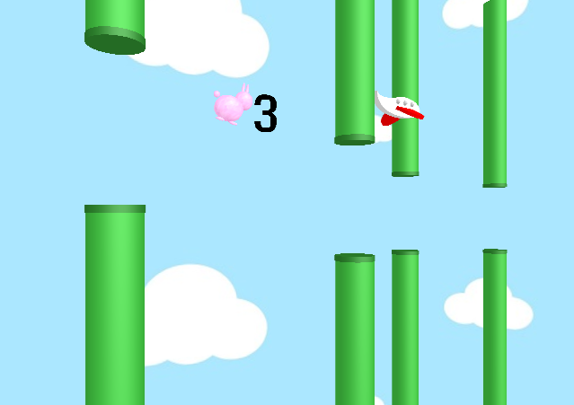
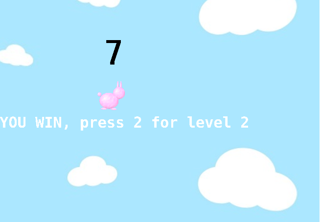

g: start the game
j: jump
s: stop
0: restart level 1
2: start level 2
a: move left in level 2
d: move right in level 2
click here to learn more about our project
We recreated the popular game "Flappy Bird" using ThreeJS.
Our game has two levels. The first is similar to the traditional Flappy Bird game, where you jump through sets of pipes. The second level has a different camera perspective and introduces 3D depth movement, in which the bunny has to jump through pipes that not only vary in height, but also in depth positioning.
The notable objects in our scene are the bunny, pipes and planes. The bunny is made up of scaled sphere geometries with a texture mapping of a fur image, while the pipes are an array of cylinder geometries. The plane was created using an extruded shape geometry with various Bezier Curves.
To create the movement in our game, in each frame, the bunny falls some amount on the y-axis, while the user has the option to have the bunny jump by pressing 'j'. As the bunny falls, it tilts forward and as it jumps, it tilts back up. The pipes move left to simulate the bunny moving forward through the pipes. Meanwhile, the planes, which are in different positions, move forward at different speeds.
The score is displayed and updated in real time as the bunny passes through the sets of pipes.
Our background is an image texture mapped with repitition onto the interior of a sphere geometry. We have ambient lighting and a directional light positioned at the upper right. We chose to keep the scene static in order to maintain the game-like feel.
Screenshot 1: Bunny passing through 1 set of pipes and score updating
Screenshot 2: Losing after hitting a pipe
Screenshot 3: Playing level 2
Screenshot 4: Winning the game :)
